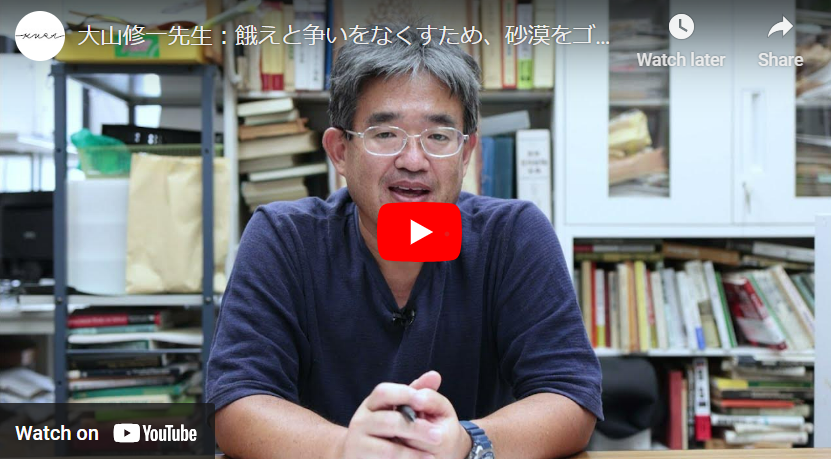

SDGs no hunger
In this page, I want you to make sure what is No hunger issues
Content
Today No Hunger
Area of hunger
How to solve the HUNGER
What should we do
Today No Hunger
In these days, The 2.4 billion people (almost 29.6% as world population), mainly in
Asia and Africa can't eat enough food
in the world because of some issues.
Poverty
- In developing contry, they haven't been able to afford to buy water, place and etc to grow plants.Also it is difficult to income only Subsistence agriculture.
Hence, they can't buy the food.
conflict
- The people in doing conflict can't eat enough food.
For instance, there are 60% people in food hunger from conflict. In conflict, They aren't be able to provide the food to people living in there.
they had lived in there can't live that area if conflict finished so that they become refugees
Food loss
- Some developing contry, it is difficult to stock the food sanitaly so that it has decaied and becomes that can't eat.
Also, as water, the half of it is thrown before the Best-before so I think it is very loss.
And,that's one-third of all food produced for human consumption (1.3 billion tons of it).
Finally, the U.N. Food and Agriculture Organization (FAO) says that if we stopped wasting all that food, we’d save enough to feed 2 billion people .
Area of hunger

This is the hunger map explaining where people are hunger.
As you understand, there are almost Africa and Asia. Also, for expanple, South Sudan has been conflict so that they can't get the food from other country.
In these area, they aren't able to get a water so they sometimes lose the plants growing if they grow the plants like vegetable
And, as they rely on inport to get foodstuffed because of climate, the price of things from other country become very high.
How to solve the HUNGER?
In Japan, there is a Japanese who tries to solve this issue in Niger called Syuichi Oyama.

In this video, he said that the conflict will be happend by very small matter because of hungry.To grow the plants to eat or feed, he has tried to throw the
garbege using native people living that area. Why has he thrown it is that if in garbage, there are species it may bloom.
so that it can be eaten by human or livestock.Also in this area, the soil was terrible so he has done plowing used white ant.
What can we do
- Don't waste food
- If we waste the food, it become garbage so we can't eat.
Also, if we have to burn it, it connect the climate change so it is terrible for the earth,
- To know the reason happend the hunger
- It is very improtant things to solve the issue. The workd is very complex so we aren't able to konw the something on the Internet.
If you go to the place facing the issue, you maybe able to find out the solution.
More SDGs
If you want to know more information about SDGs, you can click this.

SISM
Nobuhiko Hanaoka Y9